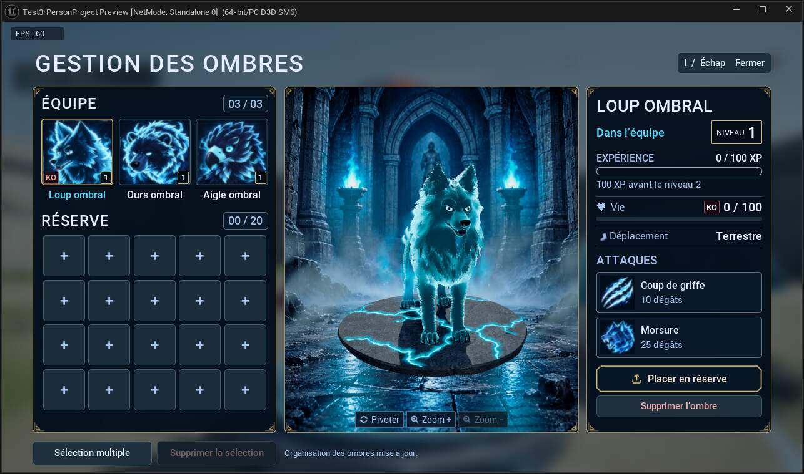
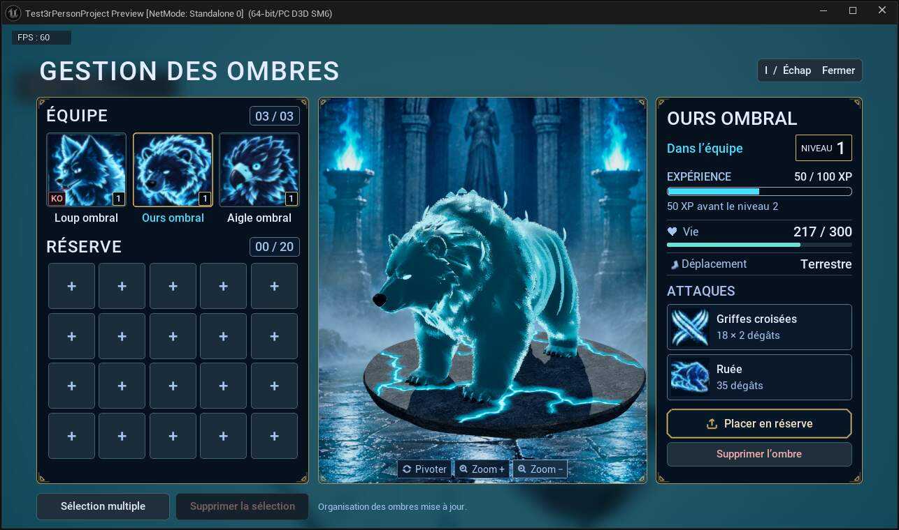
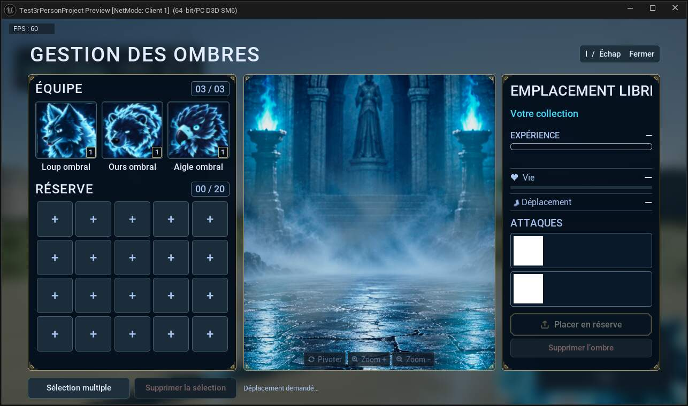

23 OCTOBRE 2026 · V27
Projet organisé, ombres et multijoueur
État courant et vérifications du lot V27.
Gestion et commandes
Le menu I est commun au solo et au multijoueur : trois places d’équipe, vingt places en réserve, portraits approuvés, niveaux, XP, PV et KO. Glisser-déposer pour déplacer ou échanger ; clic droit pour rejoindre la première case libre de l’autre espace. Équipe pleine, une nouvelle recrue rejoint la réserve. Une collection pleine refuse le recrutement sans dépenser de mana. La suppression simple ou multiple demande confirmation.
Maintenir Pivoter entraîne progressivement la plateforme et le mob ensemble, autour du centre des appuis ; le décor et les lumières restent fixes. Maintenir Zoom + ou Zoom − zoome continuellement ; les boutons sont grisés aux limites. Le cadrage coordonne la crypte et le sujet, sans modifier la taille de l’allié dans le monde. La seule nouvelle chaussure plate est affichée devant Déplacement. Portraits, cadres dorés, badges KO rouges, dégâts compacts, fissures cyan et ambiance de crypte sont conservés.
Avatar
L’avatar dispose de 2 000 points d’endurance et récupère 45 points par seconde dans les états qui autorisent déjà la récupération. Les coûts d’action restent inchangés. Après trois secondes sans subir de dégâts, il récupère un point de vie par seconde, sans dépasser ses PV maximum. De nouveaux dégâts réinitialisent ce délai ; la pause solo ne le fait pas avancer.
Multijoueur et créatures
En multijoueur, le serveur valide les transferts et suppressions de la collection personnelle. Les autres joueurs ne peuvent pas déplacer vos ombres. Les alliés en réserve ne restent pas simulés sur le terrain. Le menu ne met pas la partie réseau en pause. Les identifiants, niveaux, XP et KO sont conservés dans la sauvegarde et lors de la reconnexion. Les animations de l’ours et de l’aigle et les matériaux ombraux utilisent les mêmes assets que le solo.
L’ours conserve sa posture debout à proximité de la cible, avec marche et rotation entre ses attaques. L’aigle se repose trois secondes et utilise les raccords de pose entre sol et vol, y compris après recrutement. Son réglage de base est désormais de 150 PV et 20 dégâts de piqué dans les deux modes. La surface sombre du portail possède son effet de fissuration et une courte fin de disparition. Les noms, portraits et styles d’interface approuvés sont partagés.
Organisation du projet
Content/Avatar : personnage, personnalisation, armes et entrées ; Content/Mobs : modèles, animations, IA, alliés et réseau ; Content/UX : interface et HUD ; Content/Maps/Base : niveau solo et éléments de la base ; Content/Maps/Multijoueur : salon et quatre forts ; Content/Environnement : ressources de décor ; Content/Systemes : systèmes partagés. Le plugin natif reste dans Plugins/AvatarRuntime. Les sources artistiques restent dans Art, SourceArt et SourceAssets.
4658 fichiers sont conservés dans Corbeille, soit 15.82 Gio. Ce dossier est exclu de Git. L’inventaire versionné contient les chemins d’origine, les tailles et les empreintes SHA-256. Les anciens chemins des sauvegardes sont redirigés vers les assets actuels. SideFX_Labs est conservé : les effets d’invocation en dépendent.
Validation et portée
Contrôles automatisés V27 : Menu 18/18, Resources 10/10, Network 38/38, Capacity 50/50. Chargement et compilation de 1233 packages conservés ; aucune dépendance manquante ni ancien chemin dans cet audit. Les essais réseau utilisent des pairs PIE locaux et un délai de paquets simulé de 80 ms. Ils ne remplacent pas une partie entre deux PC via Internet/Steam et ne prouvent pas une égalité de FPS avec le solo. Aucun nouvel exécutable distribuable n’a été produit.
Documentation sur GitHub
La documentation reste en HTML et TXT. L’onglet Code de GitHub montre le fichier HTML comme du code source. GitHub Pages peut afficher ce HTML comme un site, sans le convertir ; aucune publication Pages n’est activée par ce lot. Référence officielle : https://docs.github.com/en/pages/getting-started-with-github-pages/what-is-github-pages
Captures réelles du menu
Modèles et interface capturés dans Unreal ; les statistiques visibles sont celles des données de test.




Fichiers de référence
Dépôt allégé
Les assets du jeu, le code, les plugins et la documentation restent versionnés. Les archives artistiques restent sur le PC, à leur emplacement d’origine ; les médias liés aux guides sont conservés dans Git. Environ 2,91 Go de fichiers LFS dans la sélection, ou 10,41 Go avec l’historique déjà publié, hors fichiers éventuellement reçus par l’envoi interrompu.
Inventaire des archives locales · Organisation et récupération